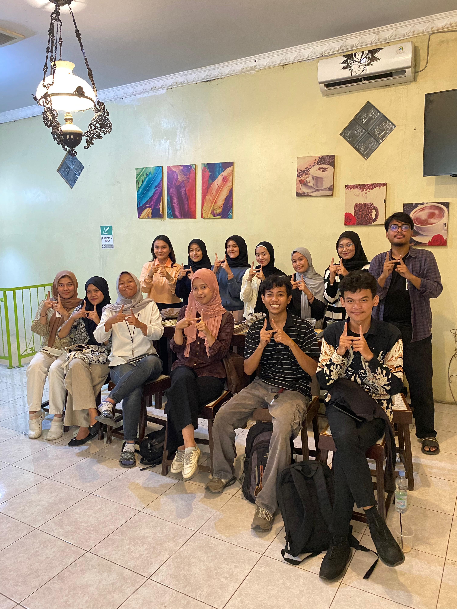
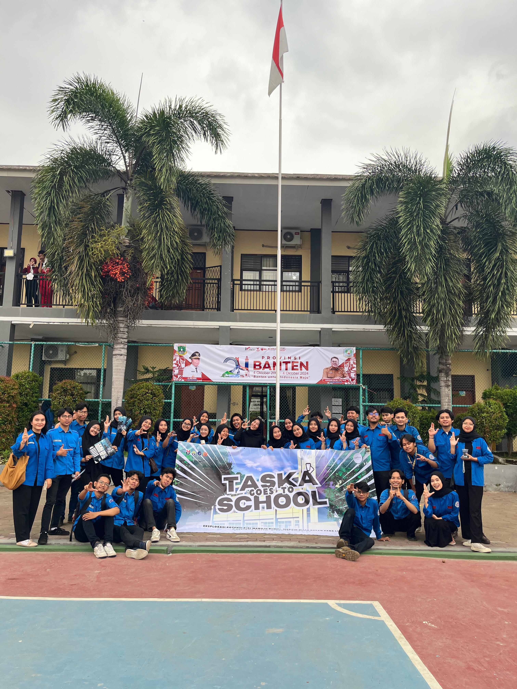
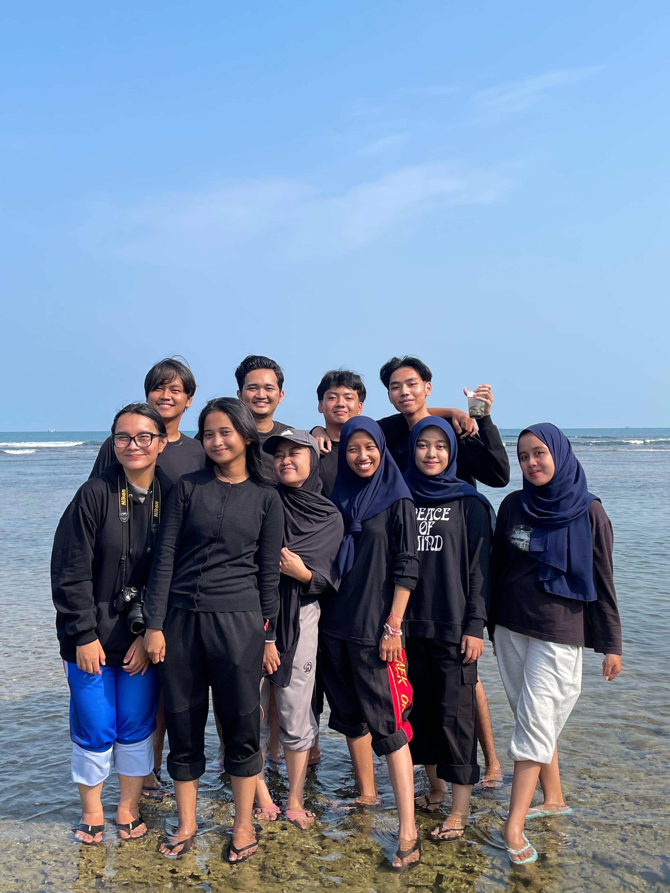
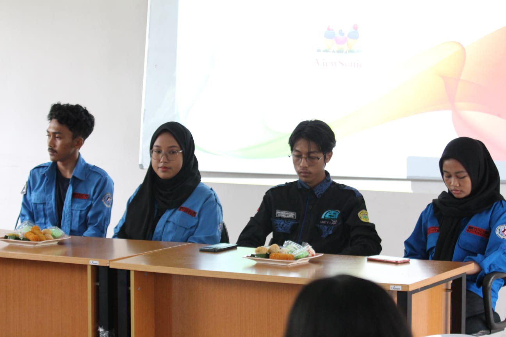
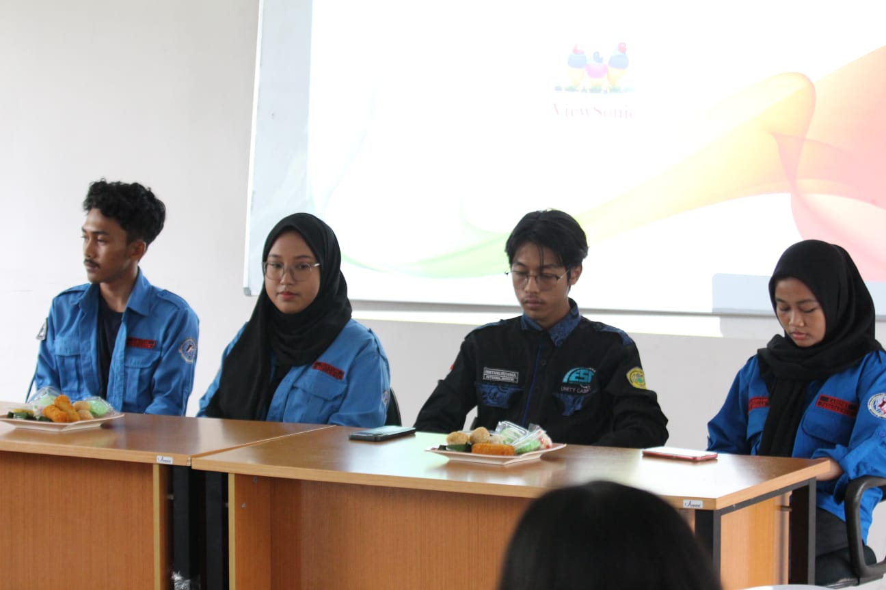

Hi, I’m Dilla Mayasari! 👋
A fast-learning and highly adaptable generalist with strong analytical thinking and problem-solving skills. Experienced in marine data analysis, satellite imagery processing, and geographic information systems (GIS) using ArcGIS, QGIS, and Python. Actively involved in multidisciplinary research projects related to coastal and marine ecosystems, including sea surface temperature monitoring and spatial modeling to support marine conservation.
Passionate about technology, project and product management, and effective scientific communication. Skilled in public engagement, with proven abilities in cross-disciplinary collaboration and student organization leadership. Known for being proactive, detail-oriented, and capable of transforming complex data into meaningful, actionable insights.
Mari terhubung atau kolaborasi bersama!
Connect with Me
Education
I am currently pursuing a degree in Sistem Informasi Kelautan (Marine Information Systems) at Universitas Pendidikan Indonesia (UPI). My studies focus on the integration of technology, data science, and marine sciences to address challenges in coastal and ocean environments.
Organizational Experience
-
Jun 2024 – Dec 2024
Bendahara Departemen Hubungan Masyarakat dan Multimedia – Himpunan Mahasiswa Sistem Informasi Kelautan   -
Feb 2023 – Feb 2024
Staff Hubungan Masyarakat, Ketua Pelaksana Studi Banding Ilmu 

My Projects & Contributions
Analisis Data Kelautan
Menganalisis data satelit untuk memetakan suhu permukaan laut di wilayah X guna mengidentifikasi potensi daerah penangkapan ikan.
Studi Kasus Manajemen Produk
Mengembangkan roadmap aplikasi monitoring biota laut, mulai dari riset pengguna hingga perumusan fitur dan backlog.
Kontribusi Penelitian
Penelitian mikroplastik dan ekosistem mangrove, mulai dari pengumpulan hingga analisis data sampel lingkungan.